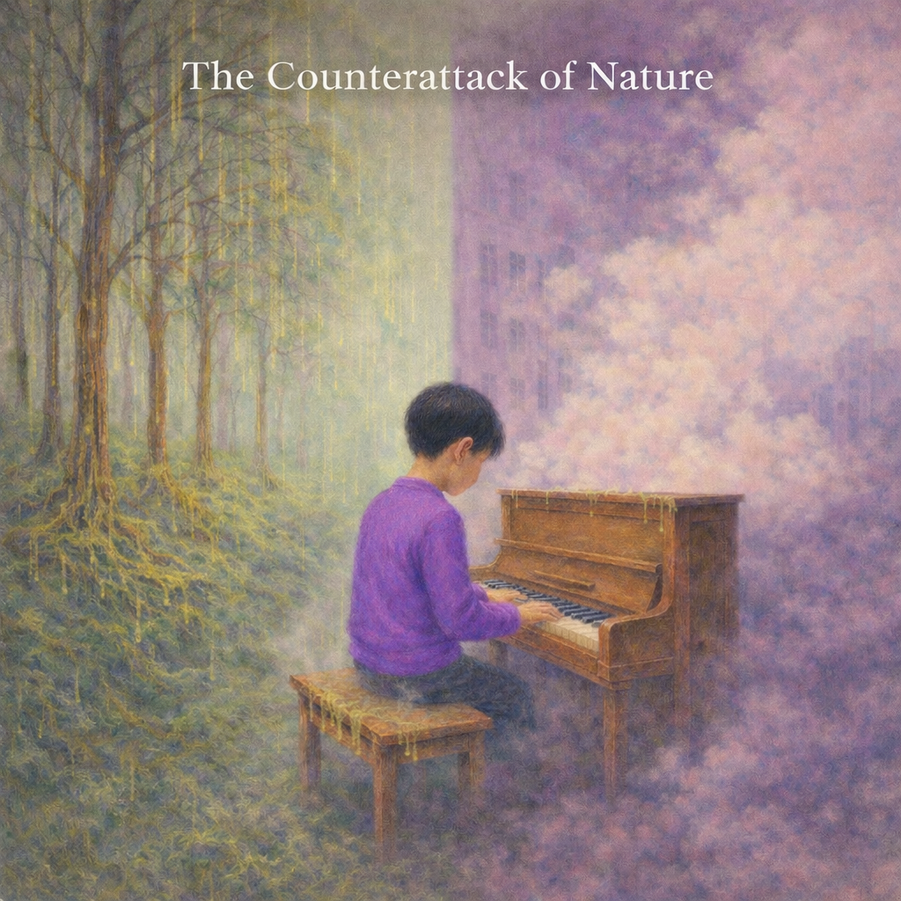

Composer · Pianist
Classical Crossover · Nature · Storytelling
정태성(Terry Jung)은 클래식 기반의 크로스오버 음악을 작곡하는
어린 작곡가이자 피아니스트입니다.
자연과 환경, 상상력에서 출발한 메시지를
음화으로 풀어내며 자신만의 세계를 소리로 기록해 나가고 있습니다.

초등학생 작곡가의 첫 번째 클래식 크로스오버 앨범. 피아노를 중심으로 드럼과 베이스 기타가 유기적으로 어우러진 이 작품은, 어린아이가 만들어냈다고 믿기 어려울 만큼 깊은 감성과 구조적 창의성이 보인다.
타이틀 트랙 ‘유독가스의 역습’은 현대 도시를 뒤덮는 보이지 않는 위협을 피아노로 묘사하며, 몽환적인 화성과 리듬을 통해 긴장과 아름다움이 공존하는 사운드 풍경을 펼쳐낸다. 이어지는 ‘산성비의 역습’은 숲이 변형되어가는 초현실적 이미지를 음악적으로 풀어내며, 부서지는 음향과 섬세한 선율을 클래식적 구성 안에 자연스럽게 담아낸다.
두 곡은 서로 다른 장면을 그리면서도, ‘자연과 인간의 경계’라는 공통된 메시지를 공유하며 하나의 작은 모음곡처럼 연결된다. 이 앨범은 단순한 어린이의 작품을 넘어, 탁월한 감각을 지닌 차세대 작곡가의 탄생을 알리는 신호탄이다.
음악계의 천재 소년 Terry Jung이 Electronica로 다시 그리는, 순수 상상력의 장대한 파노라마!
Terry Jung의 두 번째 앨범은, 단순히 어린이의 작품을 넘어선, 전 세대를 위한 판타지 음악 영화입니다. 꿈꾸는 듯 현란한 멜로디와 박동하는 리듬을 메인으로, 베이스와 Synth가 유기적으로 호흡하며 압도적인 몰입감을 선사합니다. 지난 2년간의 습작을 Electronica 버전으로 완벽하게 재해석한 이 앨범은, 34곡의 장대한 서사를 통해 고전 클래식 음악의 구조와 미래지향적 전자음악의 감성이 조화를 이루는 놀라운 음악의 연금술을 선보입니다.
타이틀 트랙 ‘Beginning of the Adventure’는 모험의 문이 열리는 그 순간의 긴장과 아름다움을 극적으로 담아냈습니다. 전율처럼 다가오는 화성의 변화와 박동하는 리듬을 통해 새로운 세계로 넘어가는 듯한 짜릿한 경험을 선사합니다. 이 앨범을 통해 우리는 Terry Jung의 순수하고 따뜻한 상상력이 만들어낸 새로운 음악적 경계를 경험하게 될 것입니다.
Listen on all platforms
Spotify · Apple Music · Melon · Genie · Bugs · FLO · VIBE
YouTube · Amazon · TIDAL · Deezer · Pandora 외
Below is a playlist of compositions currently in progress, including sketches, ideas, and unfinished works.
YouTube Playlist
▶ View Works in Progress
For inquiries:
woontaejung@gmail.com